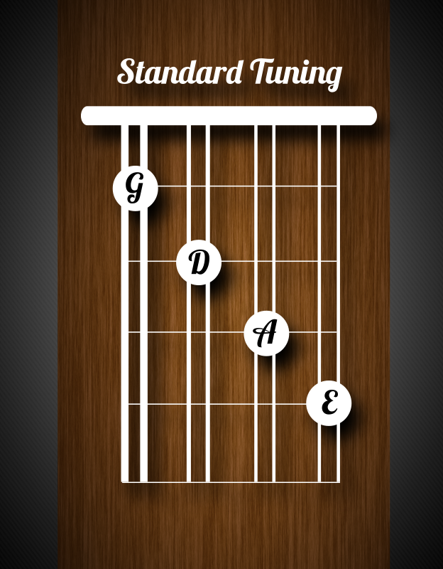

Mandolin family instruments are made in two basic types - the bowl back or Neapolitan mandolin ('taterbug') and the flatback style originated by Orville Gibson.
Flatback mandolins and mandolas are by far the most popular style now and are made by many manufacturers around the world. The plainest have a flat soundboard and fretboard but the more expensive have a radiused (slightly curved) fretboard and a carved (again slightly curved) soundboard. The larger instruments (mandocello, mandobass) are no longer manufactured but some luthiers will hand make them to order.
Learn how to tune the instrument and keep it in tune. Tune it (before) every time you play it.
There are two different materials for the strings for the types of instrument on these pages - Nickel and Phosphor Bronze, and two types of string.
Modern instruments have 12 notes (semitones) in the octave, not just 8. i.e. 12 keys on a piano (the black notes are the extras) and 12 frets on a mandolin (banjolin, banjo, etc) between any 2 notes of the same name.
Starting a major scale on a note other than C (or a minor scale on a note other than A) needs notes that are not there in the natural key (i.e. C and A minor). The starting note is called the Tonic (key note) and gives its name to the key.
Important Tuning Tip: Always play a string before you begin turning a tuning peg, That way, you’ll know if you’re turning the correct peg in the right direction.
The pentatonic minor scale is a five note scale (penta meaning five like in pentagon, and tonic meaning tone). So a pentatonic scale is a "five tone scale". There are five positions to learn in a pentatonic scale.